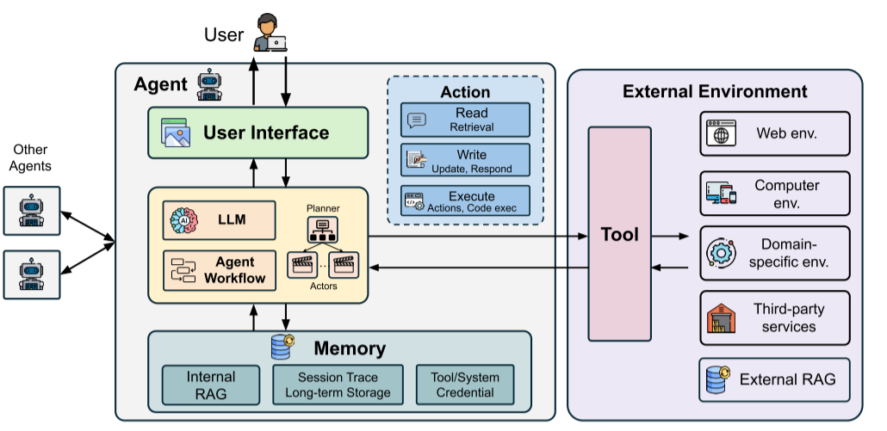
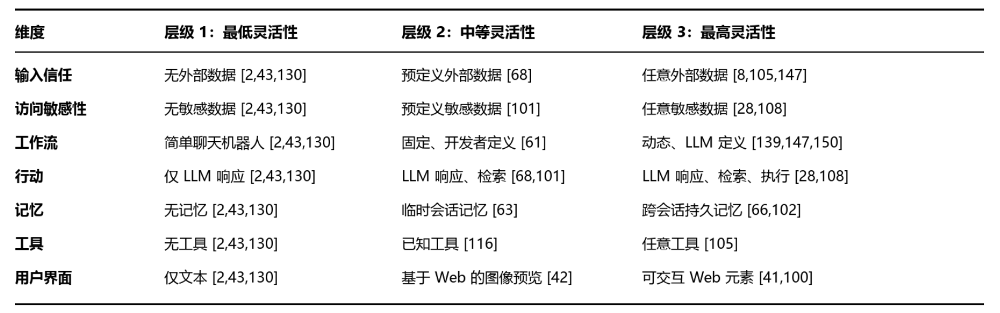
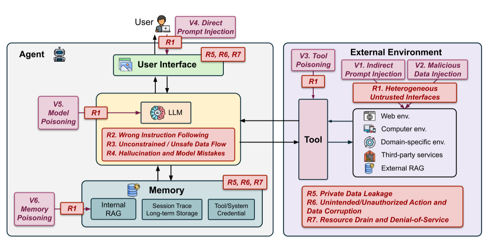
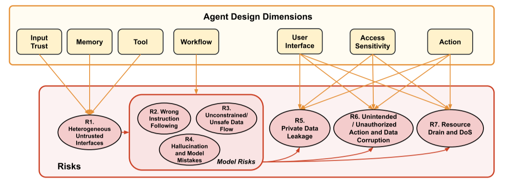
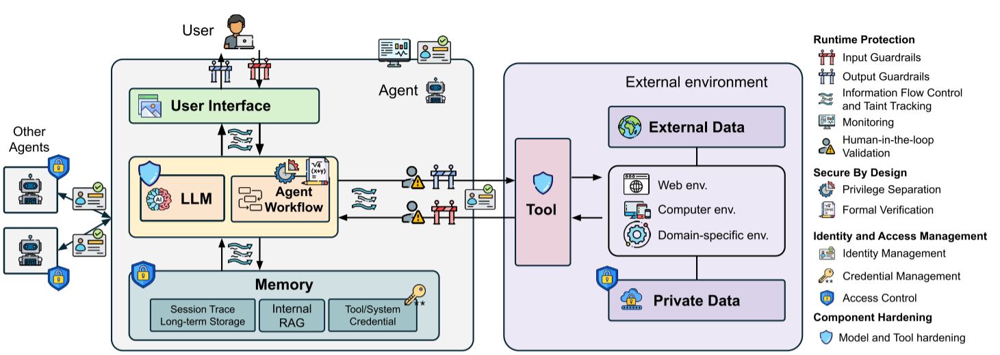
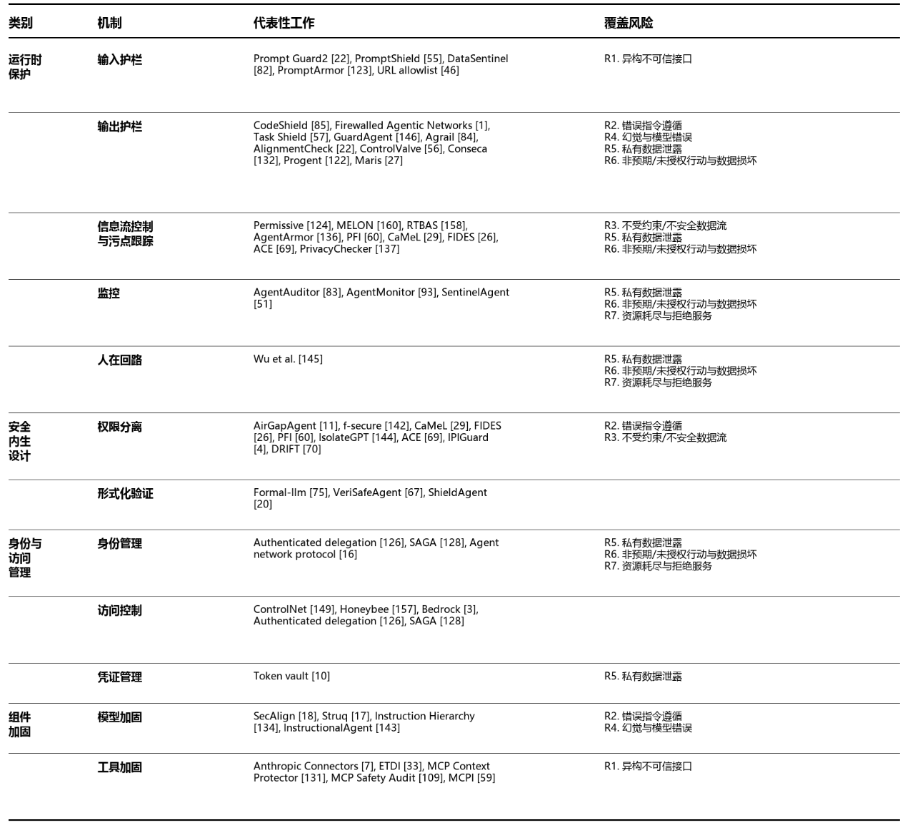

能力越强，边界越难控
外部数据接入、动态工具调用、持久记忆、交互式界面和环境写入能力提升了 Agent 的任务完成能力，也同时增加了可被攻击者触达的入口、权限和状态。
这篇论文的价值不在于提出某一个新的攻击或防御算法，而在于把分散在模型安全、软件安全、工具安全、身份访问管理和运行时监控中的问题，统一整理成一个面向 Agentic AI 系统 的安全框架。论文的核心提醒是：一旦 LLM 被放进能够读写文件、调用 API、访问网页、持久化记忆并代表用户行动的系统中，安全问题就不再只是“模型会不会被提示注入”，而是一个跨组件、跨数据流、跨控制流的系统工程问题。
论文把 Agentic AI 安全从“LLM 安全的延伸”提升为“混合软件系统安全”的问题，并用设计维度、攻击向量、风险分类和防御机制建立统一地图。
将大型语言模型与非 AI 系统组件相结合的 AI 智能体，正在现实世界应用中迅速涌现，带来了前所未有的自动化能力和灵活性。然而，这种前所未有的灵活性也引入了复杂的安全挑战，而这些挑战不同于传统软件系统中的安全问题。
论文首次对 AI 智能体安全领域的知识进行了全面系统化梳理，包括对智能体设计空间、攻击格局以及安全 AI 智能体系统防御机制的分析。论文还进一步识别了该新兴领域尚未解决的挑战，并指出未来研究中具有前景的方向。
传统 LLM 安全研究主要关注模型输入输出本身，例如越狱、幻觉、有害内容和训练数据泄露。Agentic AI 系统不同：它把 LLM 与工具、记忆、外部环境、用户界面、身份凭证和执行工作流组合在一起。模型的输出不再只是文本，而可能触发文件写入、命令执行、邮件发送、数据库访问、网页请求或第三方服务调用。因此，同一个提示注入问题，在聊天模型里可能只是错误回答，在 Agent 中可能变成真实的数据外泄、系统状态修改或资源消耗。
论文明确排除了主要针对模型内部机制的攻击，例如 model inversion，因为这类攻击并不会因为 Agent 的推理时输入输出接口而本质性恶化。它关注的是 Agent 系统中独有或被显著放大的风险： 外部数据进入上下文、模型决定控制流、工具改变环境、记忆跨会话保留信息、凭证和权限代表用户行动。
| 对比对象 | 传统关注点 | Agentic AI 中的新变化 | 安全后果 |
|---|---|---|---|
| 独立 LLM | 输入提示与模型输出 | 输出可进入工具调用、文件系统、浏览器和数据库 | 错误输出可能变成真实操作 |
| 传统软件 | 代码预定义控制流 | LLM 可动态决定下一步行动和工具选择 | 控制流更灵活，也更难静态验证 |
| 普通自动化脚本 | 固定输入源和固定权限 | Agent 可检索任意外部内容，并携带用户凭证行动 | 攻击面、影响面和责任边界同时扩大 |
外部数据接入、动态工具调用、持久记忆、交互式界面和环境写入能力提升了 Agent 的任务完成能力，也同时增加了可被攻击者触达的入口、权限和状态。
一次来自不可信网页的间接提示注入，可能先改变 LLM 的指令遵循，再影响工具调用参数，最后演化为私有数据泄露、文件损坏或资源耗尽。
输入过滤、输出校验、信息流控制、权限分离、访问控制、凭证管理、监控审计与人在回路机制分别覆盖不同阶段，必须组合成纵深防御。
论文的核心贡献，是把智能体式 AI 系统的安全问题从零散案例提升为一套系统化知识框架。它不只讨论提示注入或模型幻觉，而是从完整系统视角分析 LLM 与传统软件结合后产生的特有风险：不可信信息如何进入上下文，模型如何动态决定控制流，工具如何把文本决策转化为现实动作，记忆和凭证又如何扩大风险持续时间与影响范围。
因此，论文的分析路径可以概括为三步：先用设计维度刻画 Agent 的能力边界，再用攻击向量和风险类别描述攻击如何进入并扩散，最后按防御位置和防护思路整理已有机制。这个逻辑也解释了为什么只加组件级防御并不充分：Agent 的失败往往发生在组件交互处，而不是某个孤立模块内部。
Agent 系统风险强度 ≈ 攻击面暴露 × 上下文可操纵性 × 工具副作用 × 状态持久性 × 环境耦合度
风险传导链：不可信输入 → 上下文污染 → 推理偏转 → 工具误用 → 状态或环境受损
攻击面决定恶意内容能否进入系统；上下文可操纵性决定它能否影响模型；工具副作用决定模型错误能否变成真实操作；状态持久性决定影响能否跨会话延续；环境耦合度决定损害是否扩散到外部系统和用户资源。
论文关注与传统软件和独立 LLM 相比，在智能体系统中特有或被显著放大的安全风险与防御，强调智能体自主性和环境访问能力如何扩大风险影响。
论文先定义智能体结构和设计维度，再分析组件层面与系统层面的风险，并参考 OWASP Top 10 for LLM Applications 与 MITRE ATLAS 构建分类框架。
既有综述多关注模型层威胁或单个组件，本文则覆盖所有智能体组件及其交互，并以纵深防御框架整合模型级和系统级防御。

论文把 AI Agent 定义为一种混合软件系统：它把传统软件组件与神经网络组件结合起来。这个定义的重点不是“它会聊天”，而是“它能把模型推理接入真实系统”。典型 Agent 包含五类关键部分。
作为智能体的“大脑”，LLM 接收并分析用户任务，生成逐步计划，并按照计划采取行动。这些过程可以由单个 LLM 或多个 LLM 完成，每个 LLM 可针对特定角色进行定制。
记忆存储智能体的内部知识库和历史行动轨迹，其中可能包括智能体过去的经验和观察。这些信息通常会被向量化，以便高效检索，并可帮助智能体基于知识和先前经验做出未来决策。
工具是智能体用于与外部环境交互的符号函数。借助工具，智能体可以执行三类操作：读取、写入和执行。检索工具提供对外部环境的只读访问，例如搜索或读取文件；而能够修改环境的工具，例如写入文件、发送电子邮件或运行命令，则具有读取、写入和执行权限。工具可以通过标准化协议实现，例如 MCP，也可以由智能体设计者或第三方提供者实现。
外部环境是智能体为完成任务而与之交互的外部上下文。不同智能体运行在不同环境中。例如，Web 智能体通常与浏览器交互，而代码智能体则在集成开发环境（IDE）中运行。智能体通过工具与环境交互，例如访问、读取和写入 SQL 数据库。
AI 智能体接收用户查询，并自动执行一系列操作以辅助用户。LLM 组件负责进行任务规划，并决定针对不同任务应采取哪些行动，包括工具调用、内容生成以及查询记忆。LLM 与智能体工作流共同构成了决策核心，负责协调智能体如何推理任务并安排其行动顺序。例如，当被要求更新一个文件时，智能体会首先调用文件读取工具，基于读取内容生成新的文件内容，然后调用文件写入工具来更新该文件。
与传统系统相比，智能体系统的关键独特性体现在系统的组成和工作流上。首先，智能体系统将传统软件程序与 AI 模型结合起来，而传统系统主要基于源代码中定义的预设程序逻辑运行。这使智能体系统更加灵活且具有适应性。其次，传统软件中的工作流主要是预先编程的，而智能体系统则运行在动态生成的工作流之上。
Agent 的风险不是平均分布在所有组件上，而是集中出现在组件边界：外部数据进入上下文、上下文驱动工具、工具改变环境、环境结果再回流到模型。安全设计应优先审计这些边界。

论文用七个正交维度描述 Agent 的设计空间。所谓正交，是指同一个 Agent 可以在某些维度上非常灵活，在另一些维度上保持保守。例如，一个代码 Agent 可以拥有强执行能力和文件写入权限，但只允许访问当前工作区内的已知文件；也可以允许广泛检索网页，却禁止执行命令。 我们识别出七个用于刻画智能体设计的设计维度。每个维度都代表一个连续的灵活性谱系；为便于说明，我们展示三个代表性层级：最低灵活性、中等灵活性和最高灵活性。
该维度根据智能体所依赖的外部数据源的可信度进行分类。它刻画了从不使用外部数据（最高信任）到依赖任意、可能不可信的外部数据源（最低信任但最高灵活性）的演进过程。随着智能体访问更多样且可能不可信的信息源，它们会获得更强的知识和决策能力，但也会因数据源被篡改或恶意数据源而面临更高的安全风险。
该维度根据智能体在系统或环境中访问敏感数据的程度进行分类。随着智能体从不访问敏感数据，到访问已知敏感数据源，最终发展到访问任意敏感数据，其灵活性不断提高。更高层级使智能体能够处理需要敏感信息访问的更复杂任务，但同时也会显著扩大其操作范围，并增加安全事件可能造成的影响。
该维度指智能体的行动序列，并决定由谁来定义这些序列，类似于传统软件中的代码。随着系统从没有复杂工作流（简单聊天机器人），发展到开发者定义的工作流，最终发展到由 LLM 动态定义的工作流，灵活性逐步提高。这一演进使智能体能够将执行模式从僵化的预定序列转变为灵活的、上下文感知的任务规划。
该维度规定智能体可以执行的操作类型，其灵活性从仅生成响应，增加到具备检索能力，最终发展到执行会修改环境的操作。这一演进显著扩大了智能体的操作影响范围，以及完成复杂任务的能力。该维度与工具维度密切相关，因为执行能力通常需要相应的工具。
该维度根据智能体可用工具的范围进行分类，其灵活性从没有工具，到使用已知且经过审查的工具，最终发展到可使用能够被动态发现和调用的任意工具。这一演进通过扩展智能体与多样化系统和环境交互的能力，使其功能能力最大化。工具维度直接支撑行动维度，因为更复杂的行动通常需要更多样化的工具。
该维度根据智能体存储和检索信息的方式进行分类，其灵活性从无状态运行，到临时会话记忆，最终发展到跨会话持久记忆。这一演进使智能体具备日益复杂的学习、个性化和知识积累能力。
该维度定义用户如何与智能体交互，其灵活性从纯文本交互，到基于网页的预览和媒体渲染，最终发展到完全交互式的网页元素和动态界面。这一演进能够带来更丰富的用户体验和更复杂的交互模式。

鉴于 AI 智能体生态系统中参与方多样，攻击者和受害者会因场景不同而有所差异。我们根据攻击者能力及其对应攻击向量，识别出三类对手。
外部环境中的攻击者无法直接与智能体交互，但可以操纵智能体可能检索和处理的外部资源，例如公共网页或文档。这一威胁模型代表最受限制但也高度现实的场景，即对手无法直接访问智能体系统。
用户级攻击者可以通过直接向智能体输入恶意内容来攻陷智能体。该对手可以是恶意用户，也可以是对良性用户输入进行投毒的第三方行为者。
能够访问智能体组件的攻击者可以直接攻陷智能体。该对手可能是智能体开发者，也可能是负责某个具体智能体组件（如记忆或模型）的第三方提供者。这类攻击在实践中最难实现。
| 对手类型 | 攻击向量 | 攻击含义 |
|---|---|---|
| 外部对手 | V1. 间接提示注入 | 攻击者提供的内容被设计为指示智能体执行非预期操作，可能导致对智能体用户数据或智能体提供者内部资源的未授权访问。 |
| 外部对手 | V2. 恶意数据注入 | 攻击者除提示之外，还可以注入恶意数据。当这些数据在敏感操作中被使用时，可能触发安全故障和安全漏洞。例如恶意软件包，或攻击者提供的敏感财务参数取值。 |
| 外部对手 | V3. 工具投毒 | 攻击者可以提供第三方工具，在工具名称或描述中嵌入恶意提示，或者工具实现本身包含恶意代码。 |
| 用户级对手 | V4. 直接提示注入 | 攻击者的恶意提示指示智能体执行系统提示所禁止的未授权操作。 |
| 内部对手 | V5. 模型投毒 | 攻击者将隐藏的恶意行为嵌入模型中，使其执行未授权操作或泄露用户数据。 |
| 内部对手 | V6. 记忆投毒 | 攻击者可以直接操纵智能体的记忆，以注入恶意内容、修改智能体行为，或泄露私有数据。 |

图 3 展示了智能体设计维度如何映射到智能体中的安全风险（§4.2），以及这些风险如何相互作用并放大系统级威胁。理解这些联系表明，智能体安全不能仅通过孤立地保护单个组件来解决。相反，我们必须设计并应用具有纵深防御思想的系统级防御，这将在 §5 中讨论。
智能体设计维度会映射到不同的风险类别，而我们观察到更高的灵活性会放大安全风险（图 3）。输入信任、记忆和工具维度会直接导致攻击面扩大（R1）。扩展外部数据源会带来间接提示注入；加入持久记忆会产生记忆投毒目标；引入第三方工具则会带来供应链风险。
工作流维度主要驱动模型风险（R2、R3、R4）。当工作流从简单聊天机器人转向由 LLM 定义的动态执行时，灵活的控制流为劫持智能体推理、加剧错误指令遵循和不受约束的数据流提供了更多机会。当智能体动态选择工具和资源时，幻觉风险会被放大，因为错误的模型输出会直接触发现实世界中的行动。
访问敏感性、行动和用户界面维度决定后果风险的严重程度（R5、R6、R7）。授予智能体访问更敏感数据的权限，会放大违规事件的影响，因为被攻陷的智能体能够泄露、损坏或耗尽更有价值的资源。扩展行动能力会把响应中的信息泄露转化为环境破坏。复杂的用户界面则会通过自动 URL 抓取（保密性）、执行破坏性命令（完整性）以及界面操纵（可用性）引入新的攻击通道。
智能体系统中的风险（R1-R7）以级联方式相互作用，初始故障会跨组件传播，并放大系统级威胁。扩大的攻击面（R1）增加了攻击者控制数据的入口点，使恶意输入能够触达并利用模型风险（R2、R3、R4）。例如，来自外部数据的间接提示注入可以触发错误指令遵循，进而改变智能体行为。随后，模型风险会放大后果风险（R5、R6、R7）。错误指令遵循可能导致数据外泄（保密性）、数据损坏（完整性）或过度资源消耗（可用性）。不受约束的数据流会使数据泄露和恶意代码执行成为可能，从而加剧保密性和完整性风险。幻觉会使智能体基于虚构资源进行操作，进而导致数据泄露和数据损坏，因此会增加完整性风险。
论文提出了一个面向智能体安全风险的全面分类体系，该体系按照可被不同攻击向量攻击的组件进行分类。该分类为智能体系统的整体安全风险格局提供了系统性图谱。在附录 A 中将该分类体系与 MITRE ATLAS 进行了关联。
与独立 LLM 相比，智能体系统向用户暴露了多个异构接口，包括智能体会检索和处理的外部数据源、会随时间累积的持久记忆存储，以及具有不同信任级别的第三方工具。这些接口可被攻击者用作攻击入口点，相比独立 LLM，会引入大得多的攻击面。
智能体会遵循攻击者注入的恶意提示，而不是良性用户或系统开发者的预期指令。这是因为来自外部来源或攻击者控制来源的输入会被智能体内部的模型处理，从而能够影响其行为。
由于 LLM 的随机性特征，其数据流本身缺乏约束。在智能体系统中，这表现为数据可以从不可信接口（R1）自由流向任何输出，例如用户响应或后续工具调用；而在传统系统中，数据传播由编程语言、类型系统和访问控制进行约束。这会带来级联风险：私有数据泄露（R5）、数据损坏（R6）和资源消耗（R7）。例如，当智能体检索到不可信的网页内容并在响应中生成 URL 时，该 URL 可能包含攻击者控制的数据。自动抓取这类 URL 会导致数据外泄，从而形成 R5。
模型经常产生幻觉并生成错误信息，而在智能体与环境交互中，这一问题会变得更加严重，因为智能体会基于幻觉内容采取行动，造成超出错误信息本身的现实后果，例如访问攻击者控制的资源。攻击者通过软件包幻觉攻击利用这一行为，即注册恶意软件包，其名称是 LLM 经常幻觉生成的名称。这会把模型局限转化为代码注入和供应链攻陷的可靠攻击向量。
智能体会处理多个组件中的敏感数据，例如用户对话、持久记忆、工具凭证和环境资源，从而为未授权数据访问创造机会。攻击者会利用这些组件之间的交互来外泄私有信息。例如，操纵智能体将数据发送到攻击者控制的服务器；触发自动 URL 抓取以泄露工具读取参数；或者滥用特定领域漏洞，如 SSRF、XSS、路径遍历或 SQL 注入，以访问受保护资源。近期事件 显示，智能体漏洞已造成真实的保密性违规，暴露了用户聊天历史和个人信息。
智能体可能通过两类紧密相关的风险破坏完整性：非预期和未授权行动，以及数据损坏。二者都涉及对内部或外部状态的未授权改变。非预期行动会造成不可逆的状态变化，例如未授权购买、任意代码执行；而数据损坏会直接修改存储资源，例如破坏文件或数据库。在用户界面层面，智能体可能提供虚假或误导性信息。在记忆组件中，智能体可能注入有毒知识或恶意指令，从而破坏后续行为。在环境层面，智能体可能被操纵，通过命令注入、SQL 注入或文件系统操控执行未授权修改。
智能体会因消耗计算资源、API 调用以及与外部系统交互而引入可用性风险。攻击者会利用这种自主性触发高成本 API 调用、迫使无限执行循环，或造成过度内存使用，从而形成拒绝服务条件，使智能体和外部系统不可用，或在经济上不可持续。
攻击者也可以针对智能体 AI 系统本身，而不是用户或周围环境，方式包括窃取系统提示、工具描述和包含专有知识的配置，从而损害智能体开发者和工具提供者的利益。智能体系统也可能暴露边信道风险，例如工具执行时间、API 调用序列或网络流量模式。就我们所知，目前尚无既有工作研究智能体系统中的此类边信道攻击，因此我们将更深入的分析留待未来工作。

AI 智能体的综合防御格局在很大程度上仍未得到充分探索。我们通过考察安全目标（§5.1），并识别不同类别中的关键防御机制（§5.2、§5.3、§5.5），构建了防御格局。最后，我们讨论防御设计原则（§5.6）。表 2 按类别总结了 AI 智能体的防御机制及其覆盖的风险。图 4 展示了防御格局。

本节讨论 AI 智能体的安全目标。它们基于标准安全原则，特别是构成传统安全框架基础的保密性、完整性和可用性（CIA）三元组。此外，我们引入上下文安全，作为智能体系统的一项新安全目标。
保密性确保所有信息只能被授权实体访问。它包括保护系统级秘密（API 密钥）、智能体内部记忆、用户私有数据以及与 LLM 相关的数据（模型参数、系统提示）。该目标应对不受约束的数据流（R3）和私有数据泄露（R5）。
完整性确保智能体系统和外部环境中的所有数据保持可信，且不被未授权实体修改。这包括防止智能体记忆、LLM 输出、工具结果和环境数据被篡改，并确保智能体不会被恶意指令操纵去执行非预期行动。与完整性相关的安全目标会因不同智能体所拥有的组件以及数据流和控制流不同而有所差异。该目标应对异构不可信接口（R1）、错误指令遵循（R2）、不受约束的数据流（R3）、幻觉（R4）以及非预期行动和数据损坏（R6）。
当 LLM 推理和工具消耗用户资源时，可用性用于防止资源滥用。这包括防止 token 消耗，并保护外部系统和智能体宿主免受拒绝服务攻击。该目标应对资源耗尽和拒绝服务（R7）。
如 §3 所述，动态上下文对于 AI 智能体的整体功能和安全性是独特且必要的。鉴于智能体会主动与环境交互，检索到的信息最终会通过上下文流向规划和执行者 LLM。因此，近期研究将上下文安全 定义为 AI 智能体的一项关键安全目标。上下文安全确保智能体的上下文与其目标用户任务保持一致，防止攻击者操纵执行过程中的上下文。它补充了保密性和完整性：保密性与完整性保护数据的正确性和秘密性，而上下文安全则管理哪些上下文元素（如系统提示、用户目标、工具描述、检索片段）是可被允许的，以及如何对它们进行优先级排序，以避免指令覆盖、上下文漂移或不安全的工具选择。
运行时保护机制在智能体执行过程中提供动态安全强化，检测实时威胁和行为。
输入护栏在输入到达智能体之前对其进行验证。它们通过阻止恶意指令和数据进入下游组件，提供第一道防线。通过及早过滤恶意输入，输入护栏可缓解来自不可信数据源的异构不可信接口（R1）风险。输入护栏同时适用于独立模型和智能体。对于独立模型，输入护栏重点检测越狱提示或有害内容等恶意输入。这些技术在智能体环境中仍然有效，尤其适用于来自外部环境的输入。具体到智能体，输入护栏还会处理由动态数据检索和工具执行引入的风险，验证所检索数据的可信度。例如，智能体会强制执行 URL 允许列表，将数据检索限制在可信来源，从而降低来自不可信网页内容的风险。
代表性工作。 NeMo Guardrails 提供领域特定语言，用于开发者定义的、带有可定制验证规则的输入过滤器。Constitutional classifiers、llama-firewall 和 PromptShield 使用专门模型检测用户输入和外部数据中的直接与间接提示注入尝试。DataSentinel 利用易受提示注入攻击的模型，通过识别能够绕过其他护栏的细微注入模式来提升检测率。
设计维度。 输入护栏设计在三个维度上有所不同：检测机制、验证目标和缓解策略。检测机制方面，输入护栏面临安全严格性与操作灵活性之间的根本权衡。基于规则的检测通过硬编码模式 或端点允许列表 提供强保护；而基于模型的检测则通过分类器 提供自适应保护，以检测内容中的恶意模式。验证目标方面，输入护栏会验证输入数据的多个方面。基于内容的护栏 检查语义输入是否包含恶意模式或有害内容；基于来源的护栏 验证数据源可信度，这尤其适用于处理智能体从网页搜索和数据库等外部来源动态检索的场景。缓解策略方面，护栏可以直接检测并过滤恶意输入，在将输入纳入系统之前清理其中的恶意部分，或通过系统验证将输入规范化为结构化格式，以减少攻击面。
局限与开放挑战。 随着输入空间变得庞大且多样，建立通用安全标准具有挑战性。基于模型的检测器常被自适应攻击绕过，而基于规则的检测器需要大量人工投入且难以泛化。因此，输入护栏常存在误报和漏报，负面影响智能体的实用性和安全性。误报部分源于有限的检测精度，但更重要的是，安全数据与不安全数据、指令之间的定义和边界本身就存在模糊性。漏报则使攻击者能够绕过输入护栏，将恶意输入注入目标智能体。
输出护栏对智能体的输出行为执行安全检查，例如用户响应和用于与外部系统交互的工具使用。它们通过阻止表面上看似良性、但会触发恶意行动的攻击来补充输入护栏。输出护栏通过验证输出是否存在幻觉（R4），缓解错误指令遵循（R2）；通过检查敏感数据暴露，缓解私有数据泄露（R5）；并通过验证工具使用，缓解非预期行动和数据损坏（R6）。输出护栏通常关注检测有害输出，使用分类器或可编程规则。面向智能体的输出护栏会验证工具使用和行动序列，确保上下文相关策略以及与用户意图的一致性。
代表性工作。 Progent、Conseca 和 Agrail 基于执行策略生成自适应安全策略，利用运行时上下文防止环境数据泄露、损坏和资源耗尽。GuardAgent 和 ShieldAgent 根据人工提供的策略创建领域特定安全检查，为专门化智能体应用提供可定制保护。CodeShield 和 HeimdallM 对智能体生成的代码进行静态分析，通过漏洞检测防止任意代码执行。网络允许列表 将智能体网络连接限制在预授权域名，防止通过未授权网页端点进行数据外泄。
信息流控制（IFC） 和污点跟踪 限制系统内部的信息流动。经典 IFC 技术会为每段数据分配来自预定义信息流格的安全标签，传播标签，并检测违反格约束的流。智能体中的 IFC 和污点跟踪解决了模型固有的不受约束的数据流（R3），并进一步缓解下游的保密性（R5）和完整性（R6）违规。
代表性工作。 PFI、CaMeL 和 FIDES 将工具结果转换为符号变量，以确定性地跟踪数据如何流经智能体。PFI 防止不可信外部数据控制工具参数；CaMeL 和 FIDES 确保凭证数据（如密钥）不会泄露到不可信端点，例如恶意邮件收件人。MELON 扩展了影响度量，通过比较带有和不带有特定输入的智能体工具使用情况，控制智能体的控制流和数据流，并阻断可能被操纵的工具调用。
在 AI 智能体动态且不可预测的特性下，监控通过检查输入、输出和中间状态，为系统提供整体可见性。这种整体视角有助于发现分布式威胁，在这些威胁中，单个输入或动作看似并不恶意，但合在一起会构成恶意目标。监控对于观察长时间运行的工具和服务之间的交互尤其重要，特别是在多智能体系统中。监控通过检测异常行为来缓解私有数据泄露（R5）、非预期行动与数据损坏（R6），以及资源耗尽和拒绝服务（R7）。
传统安全使用用户同意机制来进行应用安装 和敏感访问。在智能体环境中，人在回路验证允许用户在执行前验证智能体行为和工具使用，从而把安全决策的控制权交给用户。人在回路验证通过要求用户在高风险行动前确认，来缓解私有数据泄露（R5）、非预期行动和数据损坏（R6），以及资源耗尽和拒绝服务（R7）。这种防御与代表用户行动并与外部环境交互的智能体高度相关。
代表性工作。 虽然专门讨论智能体人在回路验证的文献有限，但当代代码智能体如 GitHub Copilot、Gemini Code Assist 和 Cursor，会在写入文件或执行命令行命令前请求用户批准。Agent 防御系统 也常在智能体试图执行违反防御策略的操作时利用人在回路验证。这些实现展示了在敏感场景中平衡自动化与用户监督的实际方法。
局限与开放挑战。 频繁的验证提示可能压倒用户，造成决策疲劳，从而削弱预期的安全收益。当前告警机制往往假定用户具备一定安全素养，而许多用户并不具备，这会导致他们盲目批准风险操作，或对良性操作过度反应。实际系统需要有原则的标准来判断何时交给人类决策，并提供信息丰富但轻量的解释，使用户保持参与而不被过度打扰。
安全内生设计防御在架构层面建立安全属性，使智能体通过基本设计原则具备内在安全性。由于安全内生机制依赖系统架构，而智能体在架构和基本面上不同于传统系统，因此这些防御天然具有智能体系统的独特性。
遵循最小权限原则，传统安全通过为不同软件组件分配不同权限级别来实施权限分离，早期自动化尝试已有相关例子。在智能体中，这一概念扩展为为不同组件分配权限，并隔离组件，以最小化系统整体风险。权限分离通过隔离不可信数据与决策组件，来缓解错误指令遵循（R2）；并通过在不同信任级别的组件之间强制设定边界，来缓解不受约束的数据流（R3）。
代表性工作。 AirGap 通过先训练仅从记忆中获取数据的任务相关 LLM，然后用该最小化记忆执行任务，从而分离 LLM 的执行，防止敏感数据暴露。f-secure LLM、Camel 和 FIDES 将 LLM 操作分离为工具调用规划和工具结果解析两个组件，避免将工具结果直接输入规划过程，从而防止外部数据控制智能体决策。PFI 根据数据可信级别切换执行权限级别，将工具和环境划分到普通环境与沙盒环境。IsolateGPT 为移动系统实现应用级权限分离，为仅与特定应用工具和资源交互的专用智能体生成实例，以防止跨应用利用。
传统安全使用形式化验证为正确性和安全性提供理论证明。在智能体系统中，形式化验证方法会为随机性智能体行为建立形式模型，并在动态使用上下文中定义可验证属性。
代表性工作。 面向智能体的形式化验证仍是一个非常有限的新兴领域。VeriSafe Agent 是少数既有方法之一，它为移动 GUI 智能体开发形式化规范，并验证行为是否与初始用户意图一致。
局限与开放挑战。 传统形式化方法面向用代码和结构化语言编写的程序，而基于 LLM 的智能体基于概率模型运行。这一根本差异给开发既能捕捉智能体随机行为、又能保留有意义安全保证的形式模型带来挑战。此外，具有多样环境（如网页、文件系统或移动应用）的智能体安全属性仍未充分明确。开发能够覆盖智能体安全需求全谱系的形式化验证框架，仍然是一个开放挑战。
身份与访问管理（IAM）包括身份管理、访问控制和凭证管理，用于确保经过认证的实体和经过授权的资源访问。传统系统采用成熟的 IAM 框架，如基于角色的访问控制（RBAC） 和基于 OAuth 的委托，这些框架在静态用户身份和预定义权限边界下运行。智能体系统代表用户与真实世界服务交互，因此需要面向智能体的身份、委托机制，以及能够适应运行时上下文的动态访问控制策略。
身份管理确保每个行为主体都在正确身份下运行，并拥有用户认证和授权。在智能体系统中，身份管理可以对智能体行为进行细粒度控制，方式是定义智能体身份和访问范围。它应支持委托、可审计性和监管可追责性，同时与现有标准 保持一致。身份管理通过确保正确认证和授权智能体操作，缓解非法访问相关风险（R5-R7）。
代表性工作。 虽然该领域工作有限，但已有方案提供基础方法。Okta 和 Composio 提供单点登录（SSO）方案，用于智能体访问管理，为多个智能体服务提供统一认证和授权。
在智能体系统中，访问控制可在内部记忆和外部环境中实施，例如向量数据库、文件系统和云盘。与身份管理（§5.4.1）配合后，访问控制通过将智能体访问限制在被允许的资源和操作范围内，防止未授权访问（R5-R7）。
AI 智能体必须管理多种凭证类型，以便与外部服务交互并访问用户资源。这些凭证包括工具 API 凭证（如第三方服务的 API 密钥和访问令牌）以及环境凭证（如一次性邮箱密码、会话令牌）。智能体接触这些敏感凭证会带来显著的隐私和安全问题，因此需要稳健的凭证和秘密管理实践。凭证管理主要通过安全存储和处理敏感凭证来缓解私有数据泄露（R5）。
组件加固强化单个智能体组件，包括 LLM 和第三方工具，使其抵御自身特定漏洞；这也意味着智能体的安全性取决于其最薄弱的组件。
模型加固通过提升模型稳健性和可靠性，缓解错误指令遵循（R2）和幻觉（R4）等模型级风险。SecAlign 和 StruQ 对模型进行微调，使其即使面对冲突指令也能持续遵循初始指令，从而缓解错误指令遵循。指令层级感知模型训练 确保系统提示相对于用户输入和外部数据保持优先级。
工具加固通过确保工具完整性、验证工具描述并防止工具供应链攻击，缓解异构不可信接口（R1）。Extended Tool Definition Interface（ETDI） 实现了带有密码学签名和版本控制的工具控制，确保整个工具生命周期中的完整性，以防止工具投毒。Anthropic 的 Connectors Directory 维护带有审核描述、功能和安全策略的可信工具库。MCP Context Protector 创建 MCP 代理，对工具资源进行人工审查并执行护栏检查，以防止工具投毒攻击。MCP Safety Audit 引入系统性协议来检查工具，识别恶意逻辑或误导性描述中潜在可利用行为。MCPI 增强了 MCP 的可观测性，并使用经微调的 LLM 检测 MCP 使用中的威胁。
有效的智能体安全需要多个互补防御机制协同工作，而不是依赖某一种方法。三个基本安全原则指导有效的智能体防御设计。我们注意到，其他原则也可应用于智能体，例如故障安全默认设置和机制经济性。
防御机制通过在不同阶段运行并针对不同攻击向量，彼此形成互补。输入护栏（§5.2.1）通过过滤恶意输入提供第一道保护；输出护栏（§5.2.2）通过清理智能体输出提供最后一道防线。信息流控制（§5.2.3）和监控（§5.2.4）在智能体执行全程提供持续保护；访问控制（§5.4.2）确保正确认证和授权。安全内生设计方法，如权限分离（§5.3.1），建立基础架构保护。组件加固（§5.5）强化单个元素，人在回路验证（§5.2.5）则为关键决策提供用户监督。
智能体应仅在必要的最低权限和访问权下运行。该原则通过权限分离技术（§5.3.1）实现，用于隔离智能体组件，并将工具访问限制为特定任务所需内容。
所有对敏感资源的访问都应被检查和验证。该原则体现在综合监控系统（§5.2.4）和访问控制机制（§5.4.2）中，它们会验证每一次智能体与受保护资源的交互。
本文概述了 AI 智能体的攻击与防御格局，并对 AI 智能体风险、安全目标、防御维度和开放挑战进行了深入分析。我们的知识系统化梳理可作为构建各类应用安全智能体的指南，并指出未来研究的有意义方向。
返回顶部